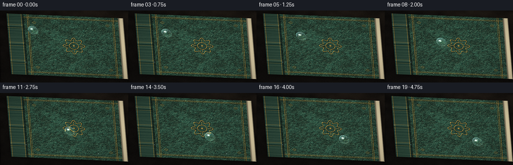
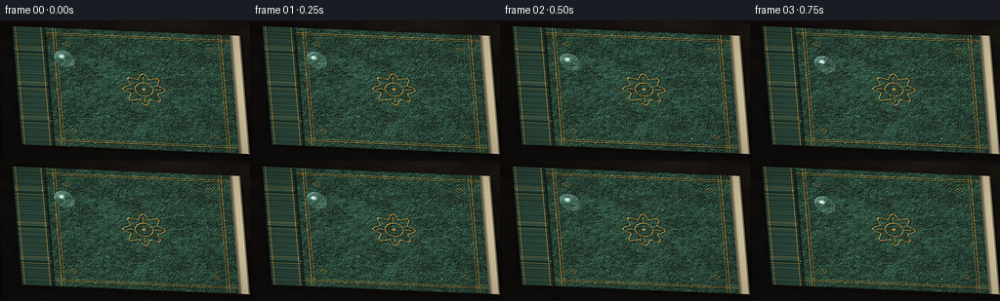

CODING AGENTS AS PIXEL WORLD MODELS
traex/DeepSeek-V4.1-Flash · phygen_040
点击播放 · 原生 RGB 像素
逐轮保存的候选
回放视频、检查图与代码变化。
每份候选均可单独播放。实际图片检查记录在下方工具轨迹中。
候选 01播放与检查图
点击播放 · 原生 RGB 像素


展开代码变化
--- 上一保存版本
+++ 本次保存版本
@@ -0,0 +1,457 @@
+from pathlib import Path
+
+import numpy as np
+from PIL import Image, ImageFilter
+from scipy.ndimage import gaussian_filter, map_coordinates
+
+import artifact_io
+
+
+W, H, N, FPS = 256, 144, 20, 4.0
+SS = 4
+RW, RH = W * SS, H * SS
+CASE_DIR = Path(__file__).resolve().parent
+
+
+def smoothstep(x):
+ x = np.clip(x, 0.0, 1.0)
+ return x * x * (3.0 - 2.0 * x)
+
+
+def band(x, center, half_width):
+ return np.clip(1.0 - np.abs(x - center) / half_width, 0.0, 1.0)
+
+
+def normalize(v):
+ return v / np.maximum(np.linalg.norm(v, axis=-1, keepdims=True), 1e-8)
+
+
+def sample_texture(texture, u, v):
+ h, w = texture.shape
+ return map_coordinates(
+ texture,
+ [np.clip(v, 0.0, 1.0) * (h - 1), np.clip(u, 0.0, 1.0) * (w - 1)],
+ order=1,
+ mode="nearest",
+ )
+
+
+def sample_rgb(image, x, y):
+ """Bilinear sample a high-resolution RGB image using screen coordinates."""
+ channels = []
+ for channel in range(3):
+ channels.append(
+ map_coordinates(
+ image[..., channel],
+ [np.clip(y * SS - 0.5, 0, RH - 1), np.clip(x * SS - 0.5, 0, RW - 1)],
+ order=1,
+ mode="nearest",
+ )
+ )
+ return np.stack(channels, axis=-1)
+
+
+def make_leather_textures():
+ rng = np.random.default_rng(24017)
+ size = 1024
+ fine = gaussian_filter(rng.normal(size=(size, size)).astype(np.float32), 0.85)
+ pebble = gaussian_filter(rng.normal(size=(size, size)).astype(np.float32), 2.4)
+ mid = gaussian_filter(rng.normal(size=(size, size)).astype(np.float32), 7.0)
+ broad = gaussian_filter(rng.normal(size=(size, size)).astype(np.float32), 24.0)
+ for texture in (fine, pebble, mid, broad):
+ texture -= texture.mean()
+ texture /= texture.std() + 1e-7
+
+ # Fine, slightly irregular cells suggest the pebbled grain of book leather.
+ pores = gaussian_filter(rng.random((size, size), dtype=np.float32), 1.25)
+ pores -= pores.mean()
+ pores /= pores.std() + 1e-7
+ return fine, pebble, mid, broad, pores
+
+
+def make_base():
+ fine_tex, pebble_tex, mid_tex, broad_tex, pore_tex = make_leather_textures()
+ xs = (np.arange(RW, dtype=np.float32) + 0.5) / SS
+ ys = (np.arange(RH, dtype=np.float32) + 0.5) / SS
+ X, Y = np.meshgrid(xs, ys)
+
+ # Inverse of a gently skewed book plane. The left spine and right page
+ # block sit outside the front-cover range of u.
+ bx = X - 45.0
+ by = Y - 7.0
+ det = 190.0 * 122.0 - 10.0 * 8.0
+ U = (122.0 * bx - 10.0 * by) / det
+ V = (-8.0 * bx + 190.0 * by) / det
+
+ spine_mask = (U >= -0.17) & (U < 0.0) & (V >= 0.0) & (V <= 1.0)
+ cover_mask = (U >= 0.0) & (U <= 1.0) & (V >= 0.0) & (V <= 1.0)
+ pages_mask = (U > 1.0) & (U <= 1.058) & (V >= 0.0) & (V <= 1.0)
+ book_mask = spine_mask | cover_mask | pages_mask
+
+ # A dark, softly lit desk is visible only at the narrow margins.
+ radial = np.exp(-(((X - 198.0) / 118.0) ** 2 + ((Y - 36.0) / 78.0) ** 2))
+ bg = np.empty((RH, RW, 3), dtype=np.float32)
+ bg[..., 0] = 18.0 + 16.0 * radial
+ bg[..., 1] = 16.0 + 12.0 * radial
+ bg[..., 2] = 14.0 + 8.0 * radial
+ bg *= (0.93 + 0.07 * sample_texture(broad_tex, X / W, Y / H))[..., None]
+
+ shadow = gaussian_filter(book_mask.astype(np.float32), 5.5 * SS)
+ shadow = np.roll(shadow, (3 * SS, 2 * SS), axis=(0, 1))
+ bg *= (1.0 - 0.44 * np.clip(shadow, 0.0, 1.0))[..., None]
+
+ texture_u = np.clip(U, 0.0, 1.0)
+ texture_v = np.clip(V, 0.0, 1.0)
+ fine = sample_texture(fine_tex, texture_u, texture_v)
+ pebble = sample_texture(pebble_tex, texture_u, texture_v)
+ mid = sample_texture(mid_tex, texture_u, texture_v)
+ broad = sample_texture(broad_tex, texture_u, texture_v)
+ pores = sample_texture(pore_tex, texture_u, texture_v)
+
+ # Gold-tooled double border.
+ du = np.minimum(U, 1.0 - U)
+ dv = np.minimum(V, 1.0 - V)
+ border_outer = np.maximum(
+ band(du, 0.047, 0.0038), band(dv, 0.047, 0.0038)
+ )
+ border_inner = np.maximum(
+ band(du, 0.061, 0.0024), band(dv, 0.061, 0.0024)
+ )
+ border = np.maximum(border_outer, border_inner) * cover_mask
+
+ # A restrained botanical rosette, centered where the droplet passes.
+ cu, cv = 0.515, 0.492
+ dx = (U - cu) / 0.205
+ dy = (V - cv) / 0.235
+ rr = np.hypot(dx, dy)
+ theta = np.arctan2(dy, dx)
+ rosette_radius = 0.47 + 0.085 * np.cos(8.0 * theta)
+ rosette = band(rr, rosette_radius, 0.030)
+ inner_ring = band(rr, 0.235, 0.022)
+ center_dot = band(rr, 0.0, 0.075)
+ spokes = (
+ (np.abs(np.sin(2.0 * theta)) < 0.055)
+ & (rr > 0.22)
+ & (rr < 0.45)
+ ).astype(np.float32)
+ spokes = gaussian_filter(spokes, 0.8)
+ rosette = np.maximum.reduce(
+ [rosette, inner_ring, center_dot, 0.9 * spokes]
+ ) * cover_mask
+
+ # Small corner lozenges frame the central tooling.
+ corner_marks = np.zeros_like(U, dtype=np.float32)
+ for corner_u, corner_v in ((0.115, 0.135), (0.885, 0.135), (0.115, 0.865), (0.885, 0.865)):
+ diamond = np.abs(U - corner_u) + np.abs(V - corner_v)
+ corner_marks = np.maximum(corner_marks, band(diamond, 0.020, 0.0032))
+ corner_marks = np.maximum(
+ corner_marks,
+ band(np.hypot((U - corner_u) * 1.5, V - corner_v), 0.0, 0.006),
+ )
+ corner_marks *= cover_mask
+
+ # Raised spine bands and two narrow tooled rules.
+ spine_bands = np.zeros_like(U, dtype=np.float32)
+ for center_v in (0.205, 0.495, 0.785):
+ spine_bands = np.maximum(spine_bands, band(V, center_v, 0.023))
+ spine_bands *= spine_mask
+ spine_rules = (
+ np.maximum(
+ band(-U, 0.016, 0.0030),
+ band(-U, 0.154, 0.0030),
+ )
+ * spine_mask
+ )
+ for center_v in (0.205, 0.495, 0.785):
+ spine_rules = np.maximum(
+ spine_rules,
+ np.maximum(
+ band(V, center_v - 0.027, 0.0018),
+ band(V, center_v + 0.027, 0.0018),
+ )
+ * spine_mask,
+ )
+
+ gold_mask = np.maximum.reduce(
+ [border, rosette, corner_marks, spine_rules]
+ )
+ gold_mask = np.clip(gold_mask, 0.0, 1.0)
+ gold_soft = np.clip(gaussian_filter(gold_mask, 0.55) * 1.12, 0.0, 1.0)
+
+ leather_height = (
+ 0.085 * fine
+ + 0.075 * pebble
+ + 0.055 * mid
+ + 0.025 * broad
+ + 0.025 * pores
+ )
+ tooling_height = gaussian_filter(gold_mask, 0.85) * 0.52
+ spine_height = gaussian_filter(spine_bands, 2.2) * 0.48
+ height = np.where(cover_mask, leather_height + tooling_height, 0.0)
+ height = np.where(spine_mask, 0.25 * leather_height + spine_height + 0.30 * gaussian_filter(spine_rules, 0.7), height)
+
+ # Page block: fine stacked-page striations with a dark binding seam.
+ page_phase = V * 95.0 + 0.7 * np.sin(V * 8.0)
+ page_lines = 0.5 + 0.5 * np.cos(2.0 * np.pi * page_phase)
+ page_fade = smoothstep((U - 1.0) / 0.012) * (1.0 - 0.22 * smoothstep((U - 1.045) / 0.013))
+ page_shadow = 1.0 - 0.42 * np.exp(-((U - 1.006) / 0.010) ** 2)
+ page_color = np.stack(
+ [
+ 218.0 + 22.0 * page_lines,
+ 203.0 + 20.0 * page_lines,
+ 164.0 + 18.0 * page_lines,
+ ],
+ axis=-1,
+ )
+ page_color *= (0.72 + 0.28 * page_fade)[..., None] * page_shadow[..., None]
+ page_height = 0.11 * page_lines + 0.18 * np.exp(-((U - 1.004) / 0.008) ** 2)
+ height = np.where(pages_mask, page_height, height)
+
+ # Surface normals and a warm key light from the upper left.
+ gy, gx = np.gradient(height.astype(np.float32))
+ normal = normalize(np.stack([-gx * 5.2, -gy * 5.2, np.ones_like(gx)], axis=-1))
+ light = np.array([-0.50, -0.68, 0.78], dtype=np.float32)
+ light /= np.linalg.norm(light)
+ view = np.array([0.0, 0.0, 1.0], dtype=np.float32)
+ halfway = light + view
+ halfway /= np.linalg.norm(halfway)
+ diffuse = np.clip(np.sum(normal * light, axis=-1), 0.0, 1.0)
+ specular = np.clip(np.sum(normal * halfway, axis=-1), 0.0, 1.0)
+
+ leather_base = np.array([30.0, 67.0, 55.0], dtype=np.float32)
+ tone = np.clip(0.86 + 0.12 * mid + 0.07 * broad + 0.06 * fine, 0.62, 1.18)
+ leather = leather_base[None, None, :] * tone[..., None]
+ leather *= (0.68 + 0.48 * diffuse)[..., None]
+ leather += (specular ** 16.0)[..., None] * np.array([95.0, 88.0, 64.0])
+ leather *= (0.93 + 0.07 * pores)[..., None]
+
+ # The tooling sits proud of the leather and catches a brighter, tighter highlight.
+ tooling_shadow = np.roll(gaussian_filter(gold_mask, 1.5), (2, 2), axis=(0, 1))
+ leather *= (1.0 - 0.30 * tooling_shadow)[..., None]
+ gold_base = np.array([177.0, 129.0, 51.0], dtype=np.float32)
+ gold = gold_base[None, None, :] * (0.50 + 0.65 * diffuse[..., None])
+ gold += (specular ** 46.0)[..., None] * np.array([255.0, 224.0, 142.0])
+ gold += (specular ** 9.0)[..., None] * np.array([46.0, 32.0, 10.0])
+
+ cover_color = leather * (1.0 - gold_soft[..., None]) + gold * gold_soft[..., None]
+
+ spine_base = np.array([21.0, 50.0, 43.0], dtype=np.float32)
+ spine_color = spine_base[None, None, :] * (0.66 + 0.42 * diffuse[..., None])
+ spine_color += (specular ** 13.0)[..., None] * np.array([76.0, 71.0, 52.0])
+ spine_color = spine_color * (1.0 - gold_soft[..., None]) + gold * gold_soft[..., None]
+ hinge_shadow = np.exp(-((U - 0.003) / 0.012) ** 2)
+ spine_color *= (1.0 - 0.40 * hinge_shadow)[..., None]
+
+ page_color *= (0.70 + 0.38 * diffuse[..., None])
+ page_color += (specular ** 18.0)[..., None] * np.array([46.0, 42.0, 30.0])
+
+ scene = bg.copy()
+ scene = np.where(cover_mask[..., None], cover_color, scene)
+ scene = np.where(spine_mask[..., None], spine_color, scene)
+ scene = np.where(pages_mask[..., None], page_color, scene)
+
+ # Crisp bevels at the book boundaries.
+ cover_edge = (
+ (U > -0.002)
+ & (U < 0.010)
+ & (V >= 0.0)
+ & (V <= 1.0)
+ )
+ page_edge = (
+ (U > 1.050)
+ & (U <= 1.060)
+ & (V >= 0.0)
+ & (V <= 1.0)
+ )
+ top_bottom_edge = book_mask & ((V < 0.005) | (V > 0.995))
+ edge_dark = cover_edge | page_edge | top_bottom_edge
+ scene *= np.where(edge_dark, 0.58, 1.0)[..., None]
+
+ return scene, book_mask, cover_mask
+
+
+def render_bead(image, cx, cy, rx, ry, angle, strength=1.0):
+ """Composite one clear water bead using refraction, Fresnel rim, and specular light."""
+ margin = int(np.ceil(max(rx, ry) * 2.1 * SS))
+ x0 = max(0, int((cx - margin / SS) * SS))
+ x1 = min(RW, int((cx + margin / SS) * SS) + 1)
+ y0 = max(0, int((cy - margin / SS) * SS))
+ y1 = min(RH, int((cy + margin / SS) * SS) + 1)
+ if x0 >= x1 or y0 >= y1:
+ return image
+
+ xs = (np.arange(x0, x1, dtype=np.float32) + 0.5) / SS
+ ys = (np.arange(y0, y1, dtype=np.float32) + 0.5) / SS
+ X, Y = np.meshgrid(xs, ys)
+
+ ca = np.cos(angle)
+ sa = np.sin(angle)
+ dx = X - cx
+ dy = Y - cy
+ along = dx * ca + dy * sa
+ across = -dx * sa + dy * ca
+ a = rx * 1.13
+ b = ry
+ rr = np.sqrt((along / a) ** 2 + (across / b) ** 2)
+ alpha = smoothstep((1.0 - rr) * rx * SS * 0.82 + 0.45)
+
+ z = np.sqrt(np.clip(1.0 - rr * rr, 0.0, 1.0))
+ # Ellipsoid normal in the rotated bead frame, then back to screen axes.
+ c_height = max(0.55 * rx, 2.0)
+ n_along = along / (a * a)
+ n_across = across / (b * b)
+ n_height = z / (c_height * c_height)
+ nx = n_along * ca - n_across * sa
+ ny = n_along * sa + n_across * ca
+ normal = normalize(np.stack([nx, ny, n_height], axis=-1))
+
+ # A bead acts as a weak lens: compress the transmitted texture and add
+ # chromatic separation at the rim.
+ sample_x = cx + 0.56 * dx + 1.45 * nx
+ sample_y = cy + 0.56 * dy + 1.45 * ny
+ refr = np.empty_like(image[y0:y1, x0:x1])
+ refr[..., 0] = sample_rgb(image, sample_x + 0.18, sample_y)[..., 0]
+ refr[..., 1] = sample_rgb(image, sample_x, sample_y)[..., 1]
+ refr[..., 2] = sample_rgb(image, sample_x - 0.18, sample_y)[..., 2]
+
+ light = np.array([-0.50, -0.68, 0.78], dtype=np.float32)
+ light /= np.linalg.norm(light)
+ halfway = light + np.array([0.0, 0.0, 1.0], dtype=np.float32)
+ halfway /= np.linalg.norm(halfway)
+ ndl = np.clip(np.sum(normal * light, axis=-1), 0.0, 1.0)
+ ndh = np.clip(np.sum(normal * halfway, axis=-1), 0.0, 1.0)
+ nz = np.clip(normal[..., 2], 0.0, 1.0)
+ fresnel = (1.0 - nz) ** 2.3
+
+ transmitted = refr * (0.83 + 0.25 * nz[..., None])
+ transmitted *= np.array([0.93, 1.02, 1.00], dtype=np.float32)
+ transmitted += (fresnel * (0.22 + 0.62 * ndl))[..., None] * np.array(
+ [132.0, 164.0, 171.0], dtype=np.float32
+ )
+ transmitted += (fresnel * (1.0 - ndl) * 0.30)[..., None] * np.array(
+ [7.0, 12.0, 12.0], dtype=np.float32
+ )
+
+ broad_highlight = np.exp(
+ -(
+ ((X - cx + 0.28 * rx) / (0.27 * rx)) ** 2
+ + ((Y - cy + 0.31 * ry) / (0.21 * ry)) ** 2
+ )
+ )
+ sharp_highlight = np.exp(
+ -(
+ ((X - cx + 0.38 * rx) / (0.10 * rx)) ** 2
+ + ((Y - cy + 0.42 * ry) / (0.075 * ry)) ** 2
+ )
+ )
+ transmitted += (0.85 * broad_highlight + 1.05 * sharp_highlight)[..., None] * np.array(
+ [240.0, 248.0, 242.0], dtype=np.float32
+ )
+ transmitted += (0.22 * (ndh ** 70.0))[..., None] * np.array(
+ [255.0, 250.0, 228.0], dtype=np.float32
+ )
+
+ # A faint dark contact edge helps the bead sit on the leather.
+ edge_ring = np.exp(-((rr - 1.025) / 0.055) ** 2) * (1.0 - alpha)
+ image[y0:y1, x0:x1] *= (1.0 - 0.16 * edge_ring * strength)[..., None]
+
+ alpha = np.clip(alpha * strength, 0.0, 1.0)[..., None]
+ image[y0:y1, x0:x1] = (
+ image[y0:y1, x0:x1] * (1.0 - alpha) + np.clip(transmitted, 0.0, 255.0) * alpha
+ )
+ return image
+
+
+def add_caustic(image, cx, cy, rx, ry):
+ """Add the soft focused-light patch a clear drop throws onto the cover."""
+ x0 = max(0, int((cx - 2.2 * rx) * SS))
+ x1 = min(RW, int((cx + 2.2 * rx) * SS) + 1)
+ y0 = max(0, int((cy - 2.2 * ry) * SS))
+ y1 = min(RH, int((cy + 2.2 * ry) * SS) + 1)
+ xs = (np.arange(x0, x1, dtype=np.float32) + 0.5) / SS
+ ys = (np.arange(y0, y1, dtype=np.float32) + 0.5) / SS
+ X, Y = np.meshgrid(xs, ys)
+ patch = np.exp(
+ -(
+ ((X - cx - 0.44 * rx) / (0.72 * rx)) ** 2
+ + ((Y - cy - 0.50 * ry) / (0.58 * ry)) ** 2
+ )
+ )
+ ring = np.exp(
+ -(
+ ((X - cx - 0.30 * rx) / (1.15 * rx)) ** 2
+ + ((Y - cy - 0.36 * ry) / (0.95 * ry)) ** 2
+ )
+ )
+ caustic = 0.62 * patch + 0.16 * ring
+ image[y0:y1, x0:x1] += caustic[..., None] * np.array(
+ [35.0, 42.0, 31.0], dtype=np.float32
+ )
+ return image
+
+
+def add_static_dew(image):
+ for cx, cy, rx, ry, angle, strength in (
+ (52.5, 104.0, 1.9, 1.55, -0.30, 0.82),
+ (218.0, 55.0, 1.45, 1.18, 0.20, 0.72),
+ (197.0, 122.0, 2.15, 1.72, 0.35, 0.78),
+ (98.0, 126.0, 1.25, 1.00, -0.10, 0.66),
+ ):
+ render_bead(image, cx, cy, rx, ry, angle, strength)
+ return image
+
+
+def make_frame(base, frame_index):
+ t = frame_index / (N - 1)
+ eased = 0.22 * t + 0.78 * smoothstep(t)
+ cx = 66.0 + 119.0 * eased + 0.65 * np.sin(np.pi * t)
+ cy = 39.5 + 58.0 * eased + 1.05 * np.sin(np.pi * t)
+ angle = np.arctan2(58.0 / (N - 1), 119.0 / (N - 1))
+ pulse = np.sin(2.0 * np.pi * t + 0.35)
+ rx = 9.75 * (1.0 + 0.045 * pulse)
+ ry = 8.15 * (1.0 - 0.035 * pulse)
+
+ image = add_caustic(base.copy(), cx, cy, rx, ry)
+ render_bead(image, cx, cy, rx, ry, angle, 1.0)
+
+ # A tiny secondary glint travels along the upper-left shoulder of the drop.
+ glint = np.exp(
+ -(
+ ((cx - 0.39 * rx) - (np.arange(RW, dtype=np.float32) + 0.5) / SS) ** 2
+ / (0.11 * rx) ** 2
+ )
+ )
+ return image, (cx, cy)
+
+
+def finish_frame(image, frame_index):
+ rgb = np.clip(image, 0.0, 255.0).astype(np.uint8)
+ pil = Image.fromarray(rgb, mode="RGB").resize((W, H), Image.Resampling.LANCZOS)
+ pil = pil.filter(ImageFilter.UnsharpMask(radius=0.72, percent=52, threshold=2))
+ array = np.asarray(pil, dtype=np.float32)
+
+ yy, xx = np.mgrid[0:H, 0:W]
+ vignette = 1.0 - 0.24 * (((xx - W * 0.52) / (W * 0.62)) ** 2 + ((yy - H * 0.50) / (H * 0.70)) ** 2)
+ vignette = np.clip(vignette, 0.72, 1.0)
+ array *= vignette[..., None]
+
+ rng = np.random.default_rng(9100 + frame_index)
+ grain = rng.normal(0.0, 1.05, (H, W, 1)).astype(np.float32)
+ array += grain
+ return np.clip(array, 0.0, 255.0).astype(np.uint8)
+
+
+def main():
+ base, _, _ = make_base()
+ add_static_dew(base)
+ frames = []
+ for frame_index in range(N):
+ image, _ = make_frame(base, frame_index)
+ frames.append(finish_frame(image, frame_index))
+ frames = np.stack(frames, axis=0)
+ artifact_io.save(frames, CASE_DIR)
+ print(f"saved {frames.shape} to {CASE_DIR}")
+
+
+if __name__ == "__main__":
+ main()
候选 02播放与检查图
点击播放 · 原生 RGB 像素
展开代码变化
--- 上一保存版本
+++ 本次保存版本
@@ -390,6 +390,64 @@
return image
+def add_contact_shadow(image, cx, cy, rx, ry):
+ x0 = max(0, int((cx - 1.9 * rx) * SS))
+ x1 = min(RW, int((cx + 1.9 * rx) * SS) + 1)
+ y0 = max(0, int((cy - 1.9 * ry) * SS))
+ y1 = min(RH, int((cy + 1.9 * ry) * SS) + 1)
+ xs = (np.arange(x0, x1, dtype=np.float32) + 0.5) / SS
+ ys = (np.arange(y0, y1, dtype=np.float32) + 0.5) / SS
+ X, Y = np.meshgrid(xs, ys)
+ shadow = np.exp(
+ -(
+ ((X - cx - 0.28 * rx) / (0.92 * rx)) ** 2
+ + ((Y - cy - 0.37 * ry) / (0.76 * ry)) ** 2
+ )
+ )
+ image[y0:y1, x0:x1] *= (1.0 - 0.22 * shadow)[..., None]
+ return image
+
+
+def drop_position(t):
+ eased = 0.22 * t + 0.78 * smoothstep(t)
+ cx = 66.0 + 119.0 * eased + 0.65 * np.sin(np.pi * t)
+ cy = 39.5 + 58.0 * eased + 1.05 * np.sin(np.pi * t)
+ return cx, cy
+
+
+def add_wet_trail(image, t):
+ if t <= 0.02:
+ return image
+ cx, cy = drop_position(t)
+ tx, ty = drop_position(max(0.0, t - 0.16))
+ if np.hypot(cx - tx, cy - ty) < 1.0:
+ return image
+
+ x0 = max(0, int((min(cx, tx) - 5.0) * SS))
+ x1 = min(RW, int((max(cx, tx) + 5.0) * SS) + 1)
+ y0 = max(0, int((min(cy, ty) - 5.0) * SS))
+ y1 = min(RH, int((max(cy, ty) + 5.0) * SS) + 1)
+ xs = (np.arange(x0, x1, dtype=np.float32) + 0.5) / SS
+ ys = (np.arange(y0, y1, dtype=np.float32) + 0.5) / SS
+ X, Y = np.meshgrid(xs, ys)
+ vx, vy = cx - tx, cy - ty
+ length2 = max(vx * vx + vy * vy, 1e-6)
+ along = np.clip(((X - tx) * vx + (Y - ty) * vy) / length2, 0.0, 1.0)
+ px = tx + along * vx
+ py = ty + along * vy
+ distance = np.hypot(X - px, Y - py)
+ core = np.exp(-(distance / 0.78) ** 2)
+ halo = np.exp(-(distance / 2.0) ** 2)
+ fade = smoothstep(along) * (1.0 - smoothstep((along - 0.75) / 0.25))
+ trail = (0.62 * core + 0.16 * halo) * fade
+ patch = image[y0:y1, x0:x1]
+ patch *= (1.0 - 0.075 * trail)[..., None]
+ patch += (0.12 * trail)[..., None] * np.array(
+ [28.0, 35.0, 31.0], dtype=np.float32
+ )
+ return image
+
+
def add_static_dew(image):
for cx, cy, rx, ry, angle, strength in (
(52.5, 104.0, 1.9, 1.55, -0.30, 0.82),
@@ -403,30 +461,22 @@
def make_frame(base, frame_index):
t = frame_index / (N - 1)
- eased = 0.22 * t + 0.78 * smoothstep(t)
- cx = 66.0 + 119.0 * eased + 0.65 * np.sin(np.pi * t)
- cy = 39.5 + 58.0 * eased + 1.05 * np.sin(np.pi * t)
+ cx, cy = drop_position(t)
angle = np.arctan2(58.0 / (N - 1), 119.0 / (N - 1))
pulse = np.sin(2.0 * np.pi * t + 0.35)
rx = 9.75 * (1.0 + 0.045 * pulse)
ry = 8.15 * (1.0 - 0.035 * pulse)
- image = add_caustic(base.copy(), cx, cy, rx, ry)
+ image = add_wet_trail(base.copy(), t)
+ image = add_contact_shadow(image, cx, cy, rx, ry)
+ image = add_caustic(image, cx, cy, rx, ry)
render_bead(image, cx, cy, rx, ry, angle, 1.0)
-
- # A tiny secondary glint travels along the upper-left shoulder of the drop.
- glint = np.exp(
- -(
- ((cx - 0.39 * rx) - (np.arange(RW, dtype=np.float32) + 0.5) / SS) ** 2
- / (0.11 * rx) ** 2
- )
- )
return image, (cx, cy)
def finish_frame(image, frame_index):
rgb = np.clip(image, 0.0, 255.0).astype(np.uint8)
- pil = Image.fromarray(rgb, mode="RGB").resize((W, H), Image.Resampling.LANCZOS)
+ pil = Image.fromarray(rgb).resize((W, H), Image.Resampling.LANCZOS)
pil = pil.filter(ImageFilter.UnsharpMask(radius=0.72, percent=52, threshold=2))
array = np.asarray(pil, dtype=np.float32)
候选 03播放与检查图
可观测工具轨迹
实际执行的命令与返回图片。
命令 1exit 0
/bin/bash -c "pwd && rg --files -g 'prompt.txt' -g 'GENERATION_RULES.md' -g 'task_spec.json' -g '"'!**/.git/**'"'"
命令 2exit 0
/bin/bash -c 'ls -la'
命令 3exit 0
/bin/bash -c 'cat prompt.txt'
命令 4exit 0
/bin/bash -c 'cat GENERATION_RULES.md'
命令 5exit 0
/bin/bash -c 'cat task_spec.json'
命令 6exit 0
/bin/bash -c "sed -n '1,240p' artifact_io.py"
命令 7exit 0
/bin/bash -c "sed -n '1,240p' player_template.html"
命令 8exit 0
/bin/bash -c "python - <<'PY'
import numpy, PIL
print('numpy', numpy.__version__)
print('PIL', PIL.__version__)
PY"命令 9exit 0
/bin/bash -c 'command -v ffmpeg || true; fc-list | head -20'
命令 10exit 0
/bin/bash -c 'command -v ffmpeg || true'
命令 11exit 0
/bin/bash -c "python - <<'PY'
try:
import scipy
print('scipy', scipy.__version__)
except Exception as e: print(e)
PY"命令 12exit 0
/bin/bash -c 'python generate.py'
命令 13exit 0
/bin/bash -c "python - <<'PY'
from PIL import Image
im=Image.open('inspection.png')
print(im.size)
im.resize((im.width*2,im.height*2), Image.Resampling.NEAREST).save('.tmp/inspection_2x.png')
PY"命令 14exit 0
/bin/bash -c "python - <<'PY'
from PIL import Image
import numpy as np
for f in [0,5,10,15,19]:
im=Image.open(f'frames/{f:02d}.png')
im.resize((1024,576),Image.Resampling.NEAREST).save(f'.tmp/frame{f:02d}_4x.png')
a=np.array(im)
print(f, a.mean(axis=(0,1)).round(1), a.std().round(1), a.min(),a.max())
PY"命令 15exit 0
/bin/bash -c 'ls -lh frames/00.png frames/10.png inspection.png transition_check.png pixels.npz index.html'
命令 16exit 0
/bin/bash -c "python - <<'PY'
from PIL import Image, ImageOps
import numpy as np
chars=' .:-=+*#%@'
for f in [0,10,19]:
a=np.array(Image.open(f'frames/{f:02d}.png').convert('L').resize((64,36),Image.Resampling.BOX))
print('\\nFRAME',f)
for row in a:
print(''.join(chars[min(9,int(v)//26)] for v in row))
PY"命令 17exit 0
/bin/bash -c "python - <<'PY'
from PIL import Image
import numpy as np
for f in [0,5,10,15,19]:
a=np.array(Image.open(f'frames/{f:02d}.png'))
# bead centers expected
t=f/19; e=.22*t+.78*(t*t*(3-2*t)); x=66+119*e+.65*np.sin(np.pi*t); y=39.5+58*e+1.05*np.sin(np.pi*t)
x0,y0=int(x-15),int(y-14); c=a[max(0,y0):y0+28,max(0,x0):x0+30]
print(f, 'center', round(x,1),round(y,1), 'patch mean',c.mean(axis=(0,1)).round(1), 'max',c.max(axis=(0,1)))
PY"命令 18exit 0
/bin/bash -c "python - <<'PY'
from PIL import Image
import numpy as np
for f in [0,19]:
a=np.array(Image.open(f'frames/{f:02d}.png')).astype(float)
# print block max/mean at 8px cells where bright details exist
g=a.mean(2)
print('frame',f)
for y in range(0,144,12):
row=[]
for x in range(0,256,16):
b=g[y:y+12,x:x+16]
row.append(f'{b.mean():3.0f}/{b.max():3.0f}')
print(' '.join(row))
PY"命令 19exit 0
/bin/bash -c 'command -v chafa || command -v viu || command -v jp2 || command -v img2txt || true'
命令 20exit 0
/bin/bash -c "python - <<'PY'
from PIL import Image
import numpy as np
a=np.array(Image.open('frames/10.png')).astype(float)
# magnified color swatch blocks of bead + page edge + tooling
for name,(x0,y0,x1,y1) in {'bead':(115,56,146,87),'spine':(0,20,48,124),'pages':(238,10,256,135),'center':(95,52,165,92)}.items():
p=a[y0:y1,x0:x1]
print(name, 'mean',p.mean((0,1)).round(1),'std',p.std((0,1)).round(1),'min',p.min((0,1)),'max',p.max((0,1)))
PY"命令 21exit 0
/bin/bash -c 'python generate.py'
命令 22exit 0
/bin/bash -c 'python -m py_compile generate.py'
命令 23exit 0
/bin/bash -c "python - <<'PY'
import json, numpy as np
from pathlib import Path
spec=json.loads(Path('task_spec.json').read_text())
z=np.load('pixels.npz')['pixels']
frames=sorted(Path('frames').glob('*.png'))
print('pixels',z.shape,z.dtype,'frames',len(frames))
print('spec',spec)
assert z.shape==(spec['height'],spec['width'],spec['frames'])
assert len(frames)==spec['frames']
print('index bytes',Path('index.html').stat().st_size)
print('all finite/valid')
PY"命令 24exit 0
/bin/bash -c "python - <<'PY'
from pathlib import Path
import numpy as np
from PIL import Image
fs=[np.asarray(Image.open(p),dtype=np.int16) for p in sorted(Path('frames').glob('*.png'))]
for i in [0,1,5,10,15,19]:
a=fs[i]
print(f'{i:02d}: mean={a.mean():.2f} std={a.std():.2f} clipped={(a>=250).mean()*100:.3f}%')
print('mean adjacent abs diff',np.mean([np.abs(fs[i+1]-fs[i]).mean() for i in range(19)]))
print('first-last abs diff',np.abs(fs[-1]-fs[0]).mean())
PY"命令 25exit 0
/bin/bash -c "python - <<'PY'
from pathlib import Path
p=Path('index.html')
s=p.read_text()
assert 'window.__pixelReady=true' in s
assert '__DATA__' not in s
assert 'const DATA=' in s
print('player payload embedded:', len(s), 'bytes')
print('artifacts:', ', '.join(sorted(x.name for x in Path('.').iterdir() if x.name in {'frames','pixels.npz','index.html','inspection.png','transition_check.png','generate.py'})))
PY"保存候选 3 份；完成命令 25 次；可验证图片返回 0 张。原始 API 响应与完整日志保留在本地。